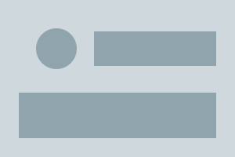
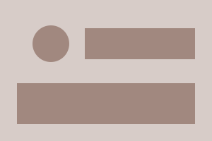
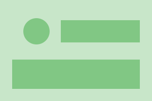

החוגים
עשרים ושניים חוגים בחמישה ערבים בשבוע, מיוגה למתחילים ועד גיטרה קלאסית. ההרשמה נפתחת בתחילת כל סמסטר והמקומות מוקצים לפי סדר ההגעה.
לוח החוגים
| החוג | יום | שעה | מדריך | מקומות |
|---|---|---|---|---|
| יוגה למתחילים | ראשון | 18:00 | נועה ברק | |
| גיטרה קלאסית | שני | 17:30 | אורי שגב | |
| ציור ורישום | שלישי | 19:00 | תמר לוי | |
| מחשבים לגמלאים | רביעי | 10:00 | דני אמסלם | |
| כדורסל נוער | חמישי | 17:00 | רון כספי |
המקום
-

-

-

לפרטים על תנאי ההרשמה והביטולים לחצו כאן.